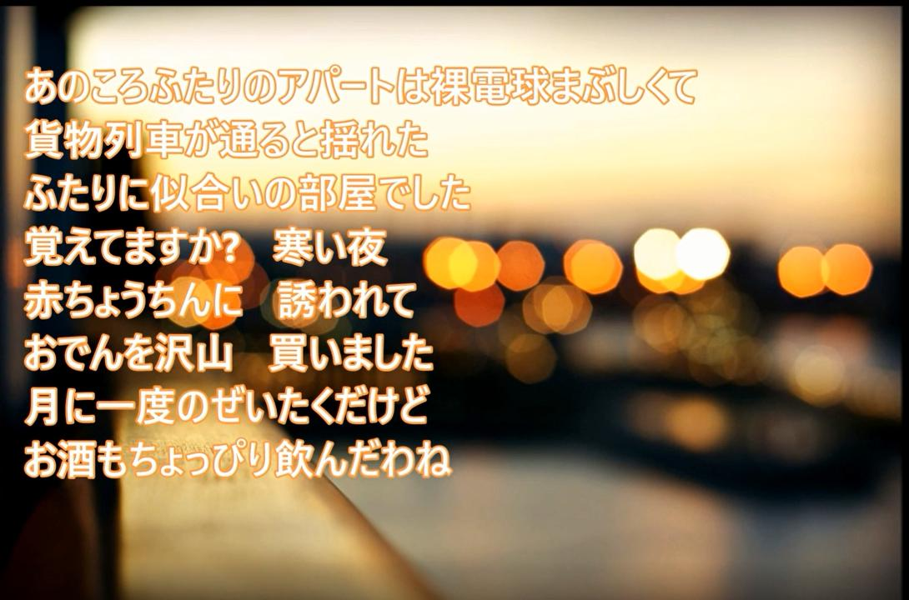
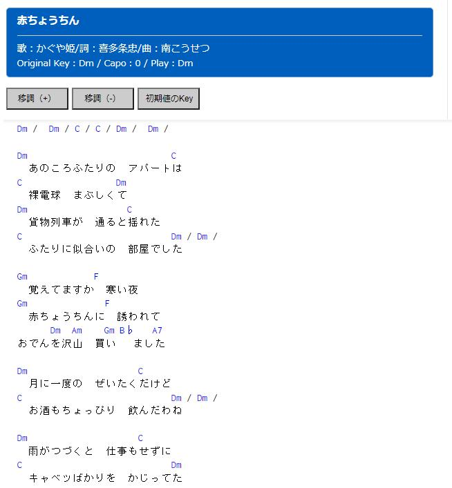
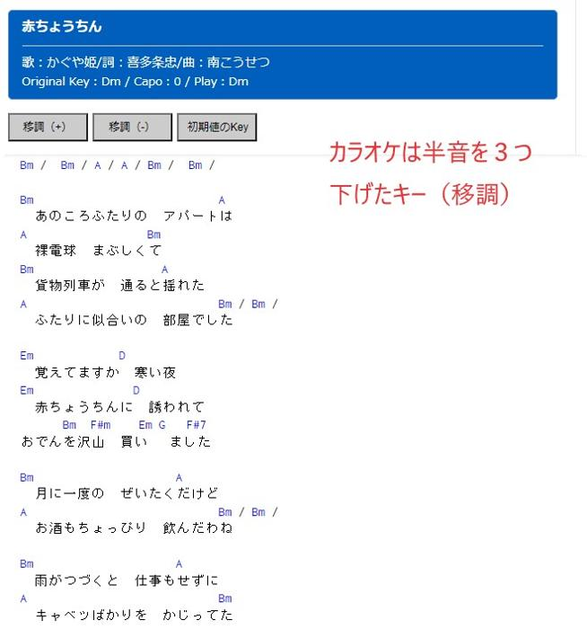

うるがいの話 ある日
最新: カラオケうるがいとは 前提知識です
カニの画像をクリックすると『うるがいの話』サイトを表示します|
|
【うるがいの話】 うるがい(ｳﾙｶﾞｲ urugai)とは、『もずくがに』の名前でとても大きくなります。 |
|---|---|
|
|
【Got cat カミマヤーの話】 たながー（ﾀﾅｶﾞｰtanagaa）とは手長えびのことで、何種類かあり大きいのは車 エビぐらいになります。 |

|
【ぶながぁの話】 ぶながー(bunagaa)とは、赤い髪の毛、赤い身体、そして身長は１ｍ２０ｃｍ ぐらい、川の蟹を食べているの目撃された。場所は沖縄県国頭郡大宜味村のと ある村僕の隣近所に住んでいる爺さんから、聞いた話です。 |
|
|
【ギーマの話】 ギーマ(giima)とは、山原の里山に咲くスズランに似た、 花を付けます。実は食べられます、 気が付くと口の周りが紫になっています。 |
2021年11月23日 (火）カラオケ
15:51

寒い！。ここまで気温が、変わると体調を崩す人がいるだろうな。カラオケは
嫌い！、人前（下手な人は）で歌うものではないと思っている、偏見ではある
が。楽譜とギターコードがあれば、ギターを弾けるのだがところがなかなか著
作権の問題か楽譜はなかなか。特に私がギターを弾いていたフォークはさらに
難しい。で、ふと、ユーチューブのカラオケ映像を流し、楽譜無しで弾けるの
ではと思いつく。かぐや姫の『赤ちょうちん』のカラオケとネットのギタコー
ド（コードは比較的容易にある）で挑戦してみた。ん！、合わない、少しがっ
かりした。そういえばカラオケは、歌いやすいようにキーを下げていると楽譜
の本にあった。ほほ、そこでかぐや姫の『赤ちょうちん』の原曲で演奏してみ
た、合う！。では、カラオケは、ふむふむキーを移調（あげたり、下げたり）
してみると、原曲から３つ下げると合うギタコードが分かる。カラオケで歌う
のは嫌だが、ギターで合奏するのは気持ちがいいス。そしてとうとう『氷雨
日野美歌』の演歌とコラボした。この曲は、社会人になったばかりの新人研修
期間に、神奈川県の江田（えだ）にあった寮で良く耳にした曲である。こうし
て勤労していない人の、勤労感謝の日が過ぎていく。
  
一番下の妹の姪の結婚式が、東南植物楽園で行われた筈だが招待はなかった。